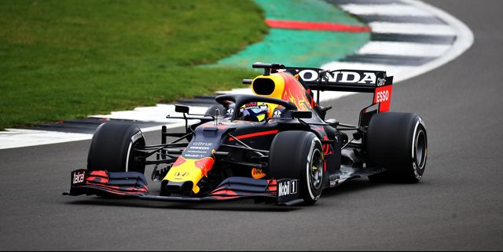

El mejor Piloto Mexicano de todos los tiempos.
Sergio “Checo” Pérez ya tiene un lugar merecido en el olimpo de la Fórmula 1 en México y el mundo. A sus 31 años, ya cuenta con premios internacionales en Bélgica, Mónaco Rusia y otros países.
Como muchos de sus compañeros, Checo Pérez comenzó su carrera deportiva a una edad muy temprana en el karting. En 1996, con solo seis años, Checo terminó su primera temporada de fórmula 1 en México en segunda posición de la general. Además concluyó con cuatro victorias en su categoría.
